Prosjekter
Alle prosjekter
Interaktive verktøy og guider – alle bygd fra grunnen for å gjøre finans tilgjengelig for vanlige folk.
Verktøy
10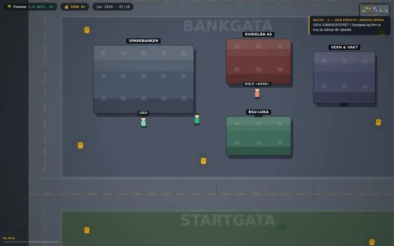
Renteriket
Et spill som lærer bort privatøkonomi fra null: fjorten oppdrag med hvert sitt minispill – budsjett som ryggsekkproblem, nedbetalingsrekkefølge på fire lån, kontovalg for fem sparere, boliglånets tre skranker og en panikkprøve over tretti år – pluss førti kunnskapskort gjemt i en by. Alle norske satser ligger i én kildeforankret blokk med årstall, og 1014 automatiserte sjekker dekker matte, oppdrag, lagring og tilgjengelighet – mattesjekkene regner fasiten på nytt med andre formler enn spillet bruker. Testene fant blant annet at ett oppdrag var matematisk uløselig, og at diversifiseringen var jukset til.
Åpne ↗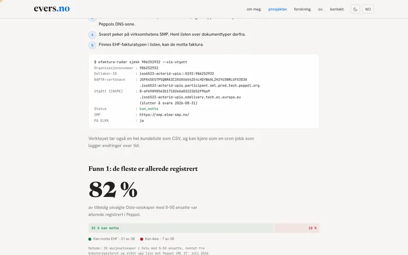
E-fakturaradar
Åpent verktøy som sjekker hvilke norske virksomheter som faktisk kan motta EHF-faktura, mot Peppol SML og SMP – uten API-nøkkel. Bygget i forkant av e-fakturaplikten i bokføringsloven, med to funn underveis: 82 % av selskapene i stikkprøven var allerede registrert, og ELMA er ikke hele Peppol.
Åpne ↗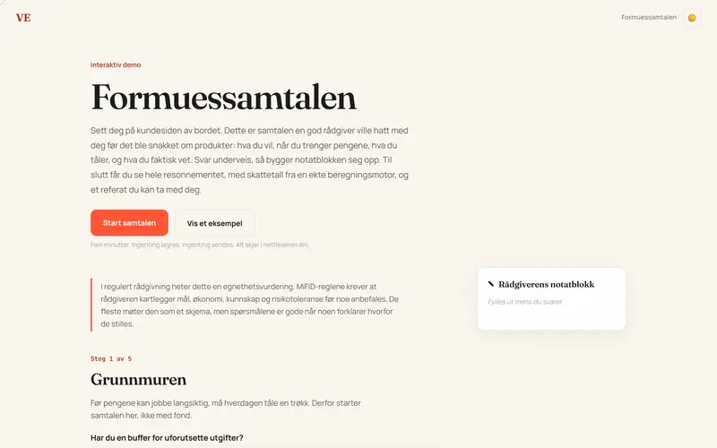
Formuessamtalen
Sett deg på kundesiden av bordet: en interaktiv demo av rådgivningssamtalen i wealth management. Egnethetskartlegging, åpen allokeringsmatrise, kontovalg (depot, ASK, eget AS) beregnet av skatt-optimizer-motoren for din profil, kalibreringstest fra masteroppgaven, og et møtereferat du kan ta med i banken.
Åpne ↗ github.com/ValiantEvers/skatt-mcpskatt-mcp
Lokal MCP-server som lar Claude beregne norsk skatt med faktiske tall – aksjegevinst, fond, ASK, formue, krypto og Nordnet-import. Alt kjører 100 % lokalt; ingen data forlater maskinen. TypeScript, MCP og Zod.
Åpne ↗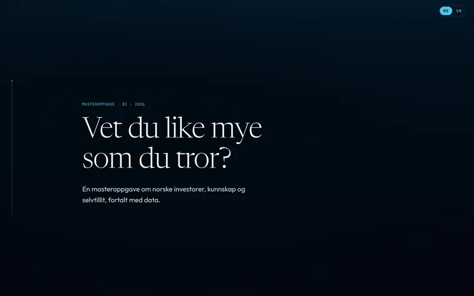
Masteroppgaven, forklart
Interaktiv, stegvis forklaring av masteroppgaven om norske investorer, kunnskap og selvtillit – uten fagsjargong.
Åpne ↗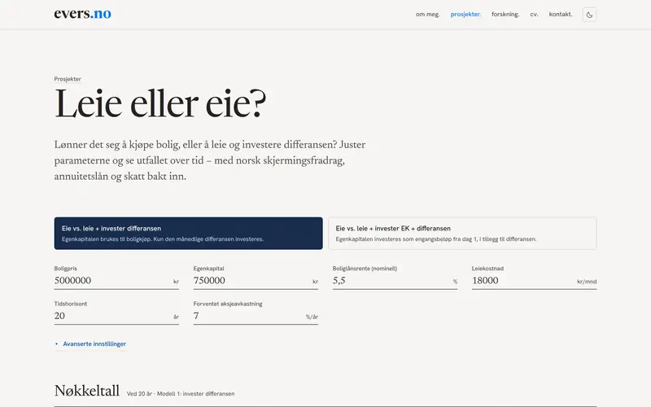
Leie eller eie?
Interaktiv kalkulator: lønner det seg å leie eller eie bolig i Norge? Annuitetslån, skjermingsfradrag og investert differanse.
Åpne ↗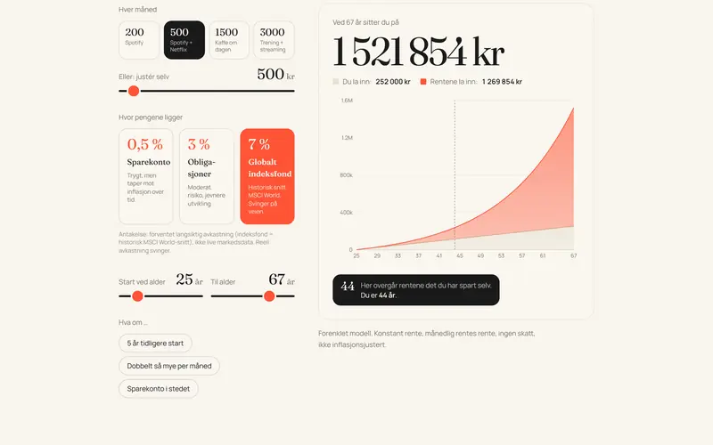
Personlig Økonomi
Interaktivt verktøy om renters rente, opportunity cost og inflasjon – for vanlige nordmenn.
Åpne ↗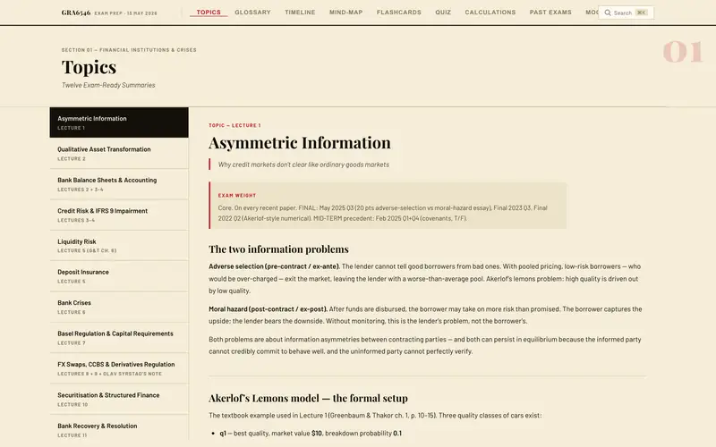
GRA6546 – Exam Prep
Interaktivt eksamensverktøy for Financial Institutions and Crises. Notater og flashcards.
Åpne ↗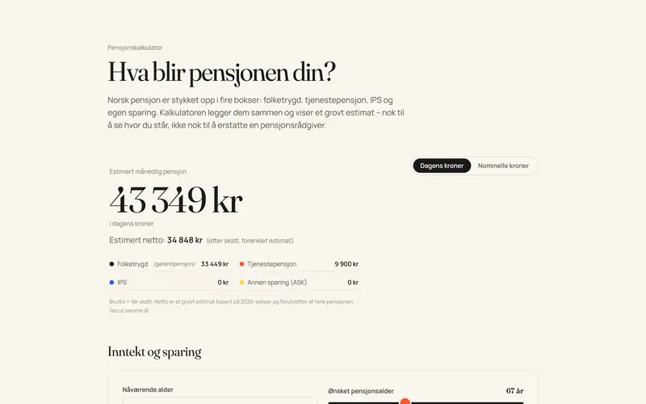
Pensjonskalkulator
Hva blir månedlig pensjon? Folketrygd, tjenestepensjon, IPS, ASK og AFP samlet – brutto og estimert netto.
Åpne ↗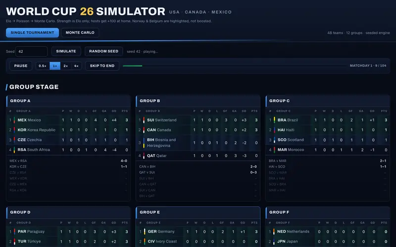
World Cup 2026 Simulator
Interaktiv VM 2026-simulator – alle 48 lag drevet av Elo. Spill én turnering med live avspilling og 2D mål-replay, eller kjør Monte Carlo for sannsynligheter.
Åpne ↗Guider
4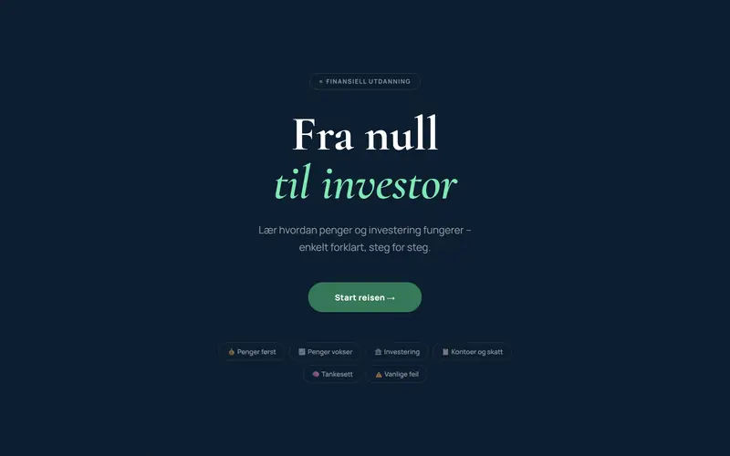
Fra null til investor
Interaktiv guide til personlig økonomi og investering
Åpne ↗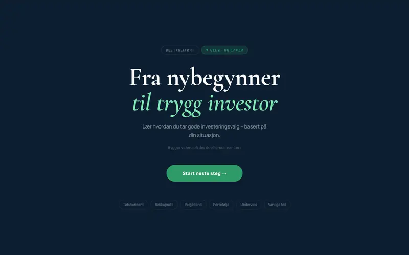
Fra nybegynner til trygg investor
Interaktiv guide til fondsvalg, risiko og porteføljebygging
Åpne ↗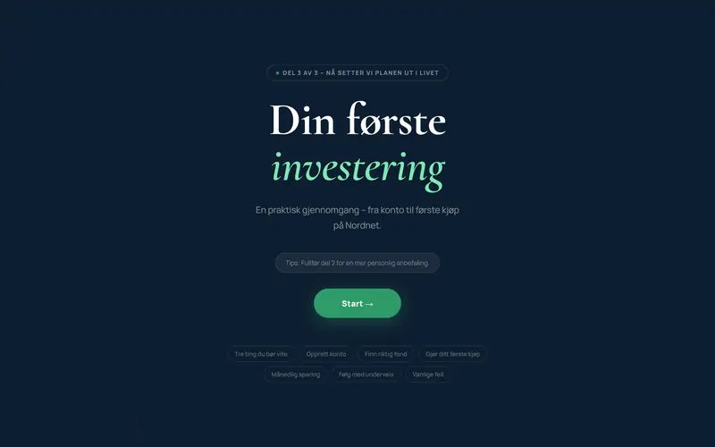
Din første investering
Steg-for-steg til din første fondshandel
Åpne ↗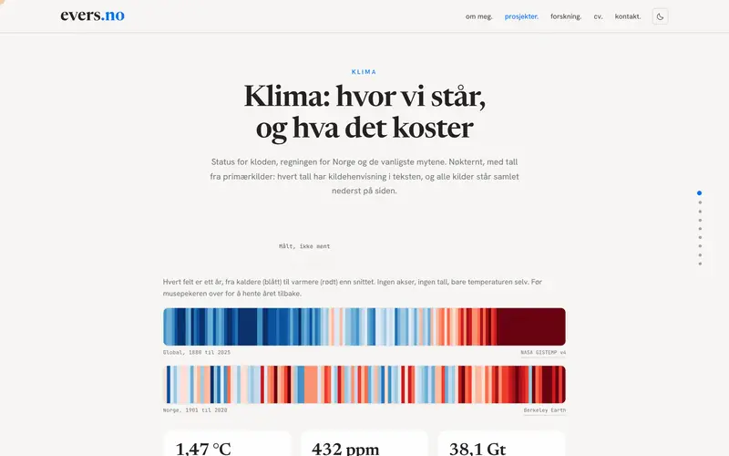
Klima: fakta og kostnader
Faktabasert side om klimaendringer: hvor verden står, hva det koster Norge, og hvordan klimarisiko påvirker verdien av selskaper. Hvert tall verifisert mot primærkilder.
Åpne ↗| Prosjekt | Kategori | Stikkord |
|---|
Ingen prosjekter matcher søket.